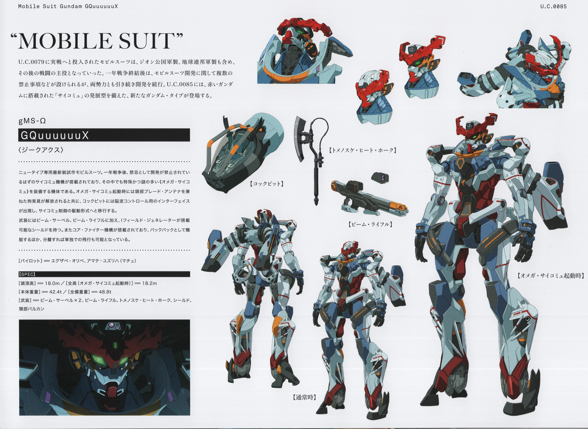

in the anime series Mobile Suit Gundam, there's a myriad of giant robots, called mobile suits, that people pilot

As my first Gundam series, I have a soft spot for Mobile Suit Gundam GQuuuuuuX and its eponymous mobile suit, the Gundam GQuuuuuuX. Its design by Neon Genesis Evangelion's Ikuto Yamashita is such a refreshing look for the series, the GQuuuuuuX looking sleek and aerodynamic while being intimidating, specially the red crest/mask on its head.
The pilot being someone as emotional and carefree as Machu just increases the personality of the GQuuuuuuX in its movements, and being one of the few protagonist mobile suits who mainly use a melee weapon makes this mobile suit quite unique.